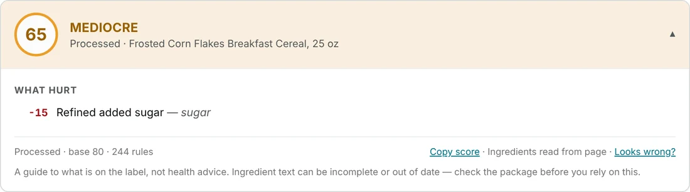
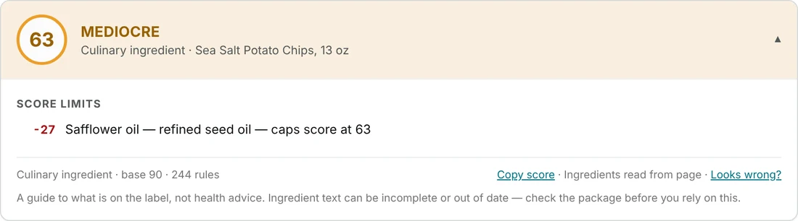
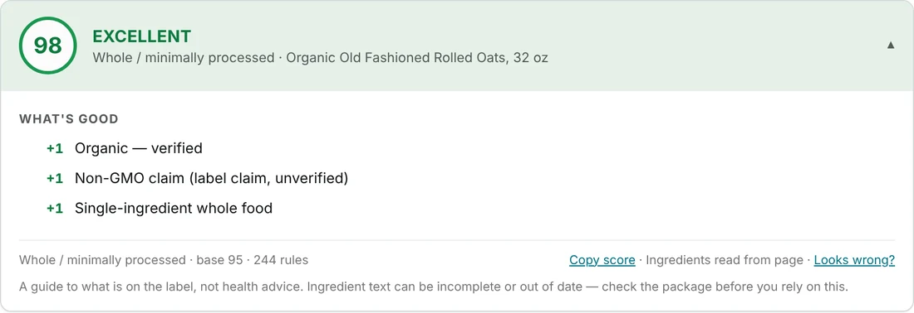

Scoring
How a score is built
A score is a guide to what is written on the label, worked out from open rules on your own computer. Here is each step, what moves the number, and what the score cannot tell you.
The five steps
- Read the list. The ingredient text is split into entries, with sub-ingredients in brackets kept under their parent. A declared share counts: Oats 98%, Sugar 2% is not the same as Oats 60%, Sugar 40%. The allergen line ("Contains: milk, soy") is set aside so it is not scored as ingredients, and an ingredient hidden by unusual punctuation is still found. If the rules recognise too little of a list, the product is declined instead of scored.
- Set the processing level. Each product lands in one of four classes: Whole / minimally processed, Culinary ingredient, Processed or Ultra-processed. They set the starting score, from about 96 for whole foods to about 60 for ultra-processed ones. It is a NOVA-style heuristic, not a validated classifier, and it does not depend on your weights.
- Charge what the label shows. Refined seed oils, added sugars, artificial colours and sweeteners, preservatives, flavourings and similar ingredients each cost points. An ingredient counts for more when it is a larger part of the product: by its declared percentage when the label gives one, otherwise by its place in the list. Nothing is charged that no rule matches.
- Add bounded bonuses. Verified organic, third-party certifications and a short ingredient list can add points. A claim the label makes but nothing verifies earns less than a verified one, and meaningless marketing wording earns nothing. A bonus can never lift a score past a ceiling.
- Apply ceilings. Some ingredients cap the final score whatever else is on the label, such as a refined seed oil (63) or an artificial sweetener (61). Ceilings stay binding under every goal, and rewards cannot get around them.
Your goals change how much each step weighs. The panel always shows the rows that moved the number, and the rows add up to the score you see.
Score bands
| Score | Verdict |
|---|---|
| 90–100 | Excellent |
| 75–89 | Good |
| 50–74 | Mediocre |
| 25–49 | Poor |
| 0–24 | Avoid |
The number and the verdict word always show the score, so colour is never the only signal. A colour-blind-safe palette is in Settings → Appearance.
Worked examples
Sample products with generic names, taken from the extension's own test page. They show how the rows read, not how any brand scores.
Sweetened cereal: 65
Processed, so the starting score is lower. Refined added sugar costs 15 points. Nothing else on the list is charged, so the score lands in Mediocre.
Potato chips: 63
The salt and potatoes are fine, but a refined seed oil sets a ceiling of 63. That is the highest this product can score under the default goal, however good the rest is. Stricter goals such as Whole-food focused apply stronger oil rules.
Rolled oats: 98
One whole-grain ingredient. Verified organic, a non-GMO claim and a single-ingredient list each add a point.



What goals change
Goals are presets for the same controls you can set by hand. They do not change the label; they change what you care about on it.
| Goal | In short |
|---|---|
| Balanced | The defaults. Processing and additives matter most; fat and total sugar stay off unless you turn them on. Rewards sourcing and short lists. |
| Whole-food focused | Short lists and minimal processing above everything: isolates, gums, flavourings and fortification cost more, and traditional preparation earns more. Keeps stricter oil and sweetener preferences. |
| Weight loss / cutting | Uses measured added sugar when the label gives it, and gives fat-reduced dairy a modest plus. |
| Low-carb | Uses the declared carbohydrate amount. |
| Vitamins & minerals | Rewards added vitamins and minerals instead of ignoring them. |
| Additive-averse | Colours, sweeteners, preservatives, flavourings (natural ones too), gums and emulsifiers cost much more. Sourcing bonuses shrink so the score is about additives. |
There are 20 goals in all, and they can be combined. See Features for the full list and for how combined goals are averaged, and Settings to change any individual weight.
What never changes a score
- Allergen, diet and avoid-list flags. They show as warnings, separate from the number.
- Marketing claims that mean nothing. They can be flagged, but earn no points.
- Country of origin alone. It earns no automatic credit.
- Price, rating and reviews. These only matter when you sort a list yourself, and the score stays the same.
- Missing information. A product with no readable label gets no score, not a low one.
What a score cannot tell you
- It is not health or allergy advice. Weights and ceilings describe this model's preferences, not measured health effects. Check the package.
- It reads the label, not the food. Ingredient text can be incomplete or out of date. Portion size and how much you eat are not in it.
- English labels are the best tested. Three English labels were captured from live store pages and many more were modelled on real products. German, Spanish, French, Italian, Portuguese, Dutch, Swedish, Polish and Turkish lists are scored through a synonym pack that has only been tested on translated lists, so treat those scores as less certain. Japanese and Arabic lists are declined.
- Rules change. When a rule changes, saved scores are retired and recalculated, and release notes say which calibration products moved.
The evidence for each language and reading method is published in the accuracy notes, and every factor and default in the calibration review.